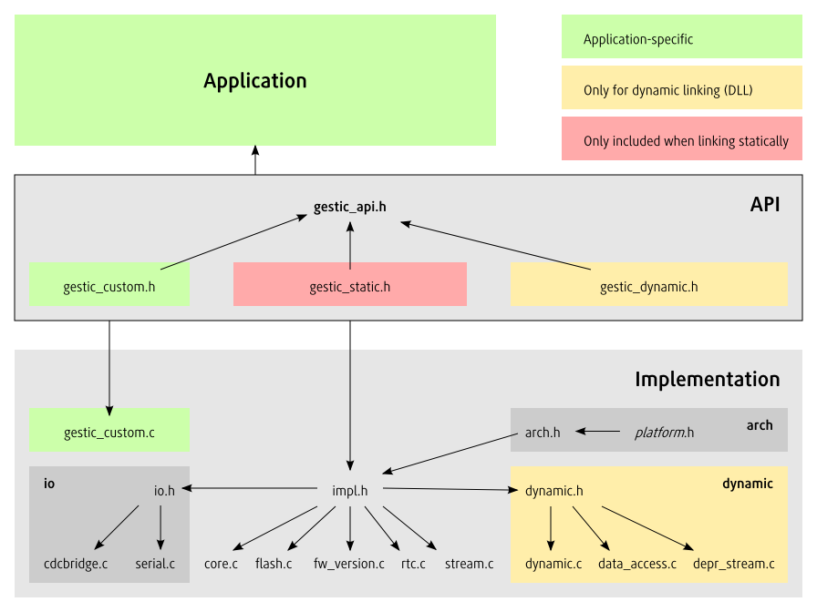
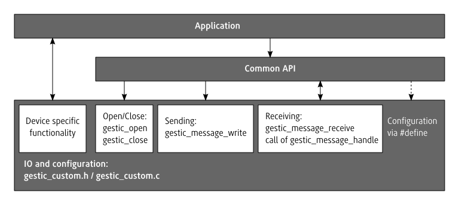

| Customizing the API | |
| Preparing Project | The GestIC API is highly configurable and allows to skip unused features or adjust the implementation to the requirements of the used platform. |
| gestic-custom.h | Configuration options could be set with defines on the command line. |
| Feature Selection | Not all files are required in each project. |
| Porting to Other Architectures | GestIC internally uses a macros for invoking functions that might custom implementations on some platforms. |
| Custom IO Implementation | If GESTIC_IO is defined as having the value of GESTIC_CUSTOM_IO the SDK only provides the signature of the functions used for communication with the GestIC device but not their implementation. |
| Asynchronous IO | Simple implementations of IO write messages during calls to gestic_message_write and read messages inside gestic_message_receive. |
| Message handling modes | |
| Synchronous message handling | The handling of incoming messages is triggered by the API itself. |
| Asynchronous message handling | An alternative to synchronous message handling inside gestic_message_receive is asynchronous message handling where a seperate thread or an interrupt triggers the handling. |
The GestIC API is highly configurable and allows to skip unused features or adjust the implementation to the requirements of the used platform. However applications have to be built with the same API configuration as was used when building the API library itself.
Threfore it might be feasable to skip the separate API and build it directly as an part of the application instead.
This page demonstrates how to setup and configure such an project and which files have to be included in it.
| gestic-custom.h | Configuration options could be set with defines on the command line. |
Configuration options could be set with defines on the command line. However it is easier to have the defines in one common header. The GestIC SDK reserves the optional application specific gestic_custom.h header which gets directly included by gestic_api.h. To trigger this inclusion only one define namely GESTIC_CUSTOM has to be set on the compiler command line. Everything else could be specified inside gestic_custom.h.
gestic_custom.h might contain definition of custom functions. Beside that some configuration defines disable the default implementation of some API functions that require a custom implementation instead. The body of those functions would be written in the source file gestic_custom.cpp per convention.
A typicall project might then have a directory structure like the following
| project-file | The project file or Makefile depending on the type of project. Specifies the define GESTIC_CUSTOM for all source files that use the API. |
| gestic_custom.h | Contains the configuration of the project |
| gestic_custom.c | Contains functions implementation for that configuration |
| main.c ... | The implementation of the application |
| gestic | The subdirectory containing the implementation of the GestIC API. |
| ▸ arch | Arch directory from the API. Located at api/src/arch |
| ▸ impl.h | Header containing API internal declarations (api/src/impl.h) |
| ▸ core.c | Core functions of the API (api/src/core.c) |
| ▸ ... | Feature specific files from api/src |
Not all files are required in each project. Here is an overview over all files of the GestIC API and their include hierarchy:
The api/src/arch directory is always needed.
The api/src/io directory however is only used for the default CDC_Serial IO implementation that is used as the default in Windows and Linux.
The api/src/dynamic directory is also only needed when linking with the Dynamic API and could be ignored otherwise.
The common part of the API could be splitted into a small core and multiple features that could be disabled if they are not required.
Here is an overview of the features and the required files.
| File | Data Retrieval | RTC | FwVersion | Flash | Logging |
|---|---|---|---|---|---|
| api/src/impl.h | Needed | Needed | Needed | Needed | Needed |
| api/src/core.c | Needed | Needed | Needed | Needed | Needed |
| api/src/flash.c | - | - | - | Needed | - |
| api/src/fw_version.c | - | - | Needed | Needed | - |
| api/src/rtc.c | - | Needed | - | - | - |
| api/src/stream.c | Needed | - | - | - | - |
| Suppressed with | GESTIC_NO_DATA_RETRIEVAL | GESTIC_NO_RTC | GESTIC_NO_FW_VERSION | GESTIC_NO_FLASH | GESTIC_NO_LOGGING |
If the API should be built with some of these features disabled the specific GESTIC_NO_* defines have to be either set via the compiler command line or in gestic_custom.h
E.g. the PIC32 programmer only needs flashing and firmware version and disables all other features:
/* Disable features that are not needed by this application */ #define GESTIC_NO_DATA_RETRIEVAL #define GESTIC_NO_RTC #define GESTIC_NO_LOGGING
GestIC internally uses a macros for invoking functions that might custom implementations on some platforms. The GestIC SDK brings direct support for Windows, Linux and PIC32 where those macros are defined. Which platform GestIC is compiled for is determined by testing for the defines _WIN32 for Windows, __linux__ for Linux and __PIC32MX__ for the PIC32.
If none of this is defined the platform specific macros have to be added by one of those two ways to add support for further platforms:
The architecture specific declarations are:
The following declaration is only used in the default IO implementation:
If GESTIC_IO is defined as having the value of GESTIC_CUSTOM_IO the SDK only provides the signature of the functions used for communication with the GestIC device but not their implementation.
The application has than to provide its own implementation of those IO functions which are: gestic_open, gestic_close, gestic_reset, gestic_message_write and gestic_message_receive.
Additionaly gestic_custom.h has to define the structure gestic_io_t, the GESTIC_CONNECTED macro and in case of asynchronous message handling one of the message handling synchronization defines. gestic_io_t is specific to the IO implementation and normaly holds any information regarding the state of the communication.
The possible message handling modes are:
| Interrupt based | If gestic_message_handle is called inside an interrupt service routine GESTIC_SYNC_INTERRUPT has to be set. |
| Threading based | If gestic_message_handle is called in a different thread than the API functions GESTIC_SYNC_THREADING has to be set. |
Those modes are exclusive and can’t be combined. Their details will be handled in detail below.
This is a short example of how the IO-related section of gestic_custom.h could look like:
#define GESTIC_IO GESTIC_CUSTOM_IO
// Define the message handling mode if required
//#define GESTIC_SYNC_INTERRUPT
//#define GESTIC_SYNC_THREADING
typdef struct {
connection_settings_t settings;
int connected;
} gestic_io_t;
#define GESTIC_CONNECTED(GESTIC) ((GESTIC)->connected)
// Add declaration to further IO specific functions, like e.g.
// void configure_connection(gestic_t *gestic, connection_settings_t *settings);Simple implementations of IO write messages during calls to gestic_message_write and read messages inside gestic_message_receive. As the CPU is normally much faster than the communication on the bus this results in performance loss. Additionally the application has to regularily call gestic_data_stream_update to avoid missing an incoming message.
An alternative is to asynchronously read and write messages by using First In, First Out buffers (queues) for incoming and outgoing data. gestic_message_write would then write the message to the out-queue and return immediately. Likewise messages would be immediately be read to the in-queue from where they are fetched and processed by gestic_message_receive.
Those queues shouldn’t grow to big as otherwise the API implementation might not be able to account response messages to sent instructions if multiple instructions with the same ID are sent in sequence.
An extension or alternative to queues for incoming data would be to also call gestic_message_handle asynchronously. This reduces the amount of messages that have to be buffered but requires synchronization to prevent races between API functions and the message processing. This synchronization is enabled by setting the correct define for the used message handling mode.
| Synchronous message handling | The handling of incoming messages is triggered by the API itself. |
| Asynchronous message handling | An alternative to synchronous message handling inside gestic_message_receive is asynchronous message handling where a seperate thread or an interrupt triggers the handling. |
The handling of incoming messages is triggered by the API itself. This means that either messages are read directly in gestic_message_receive or are stored in a FIFO buffer from where gestic_message_receive fetches them. In both cases gestic_message_receive calls gestic_message_handle to process the incoming messages.
This is simple to implement but has the disadvantage that applications have to regularily call gestic_data_stream_update to avoid loss of events when the buffer is full.
An alternative to synchronous message handling inside gestic_message_receive is asynchronous message handling where a seperate thread or an interrupt triggers the handling.
In this case gestic_data_stream_update is able to provide the application with the current values and the last event of each kind (gesture, touch, calibration, etc.) since the last update even when the application doesn’t regularily call API function when it e.g. was doing a complex calculation.
However this requires the API implementation to do internal synchronization between datan handling and API calls.
This synchronization has to be enabled by setting the correct one of the two synchronization defines GESTIC_SYNC_INTERRUPT and GESTIC_SYNC_THREADING.
It uses the macros GESTIC_SYNC_INIT, GESTIC_SYNC_LOCK, GESTIC_SYNC_UNLOCK and GESTIC_SYNC_RELEASE for synchronization which have to be defined therefore.
Setting the wrong define might result in race conditions or deadlocks.
Writes a message to the device.
int gestic_message_write( gestic_t * gestic, void * msg, int size )
Called when incoming messages should be received.
int gestic_message_receive( gestic_t * gestic, int * timeout )
Opens a connection to the physical device and associates it with gestic that was already initialized with gestic_initialize.
GESTIC_API int CDECL gestic_open( gestic_t * gestic )
Closes the connection to the device associated with gestic that was established with gestic_open.
GESTIC_API void CDECL gestic_close( gestic_t * gestic )
Tries to reset the GestIC-chip if this is supported by the connection.
GESTIC_API int CDECL gestic_reset( gestic_t * gestic )
Does the evaluation of received messages.
void gestic_message_handle( gestic_t * gestic, const void * msg, int size )
Retrieves the availabe data output from the device and updates the result buffer.
GESTIC_API int CDECL gestic_data_stream_update( gestic_t * gestic, int * skipped )